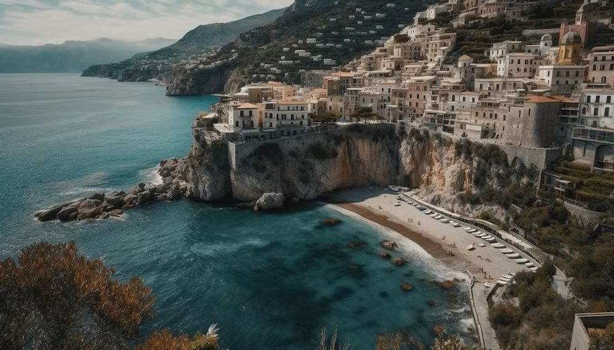

Descoperă Amalfi Coast - O călătorie scenică pe una dintre cele mai frumoase coaste din Italia
Amalfi Coast reprezintă un traseu turistic spectaculos situat în sudul Italiei, cunoscut pentru frumusețea sa naturală și orașele pitorești:
-

Positano - Perla coastei
Orașul în stil mediteranean este cunoscut pentru casele colorate așezate pe dealuri abrupte.
-

Amalfi Town - Capitala coastelor
Un oraș cu istorie bogată, oferind catedrale impresionante și străzi înguste.
-

Ravello - Bijuterie în vârf de munte
O așezare pitorească de pe dealuri, oferind grădini frumoase și vederi panoramice.
-

Fiordo di Furore - Peisaj dramatic
Un fiord spectaculos ascuns între stânci, oferind un peisaj de neuitat.
-

Villa Cimbrone - Bijuterie arhitecturală
O vilă istorică cu grădini superbe și priveliști panoramice.
Concluzii
Amalfi Coast oferă o experiență unică de explorare a frumuseții naturale și culturii italiene.